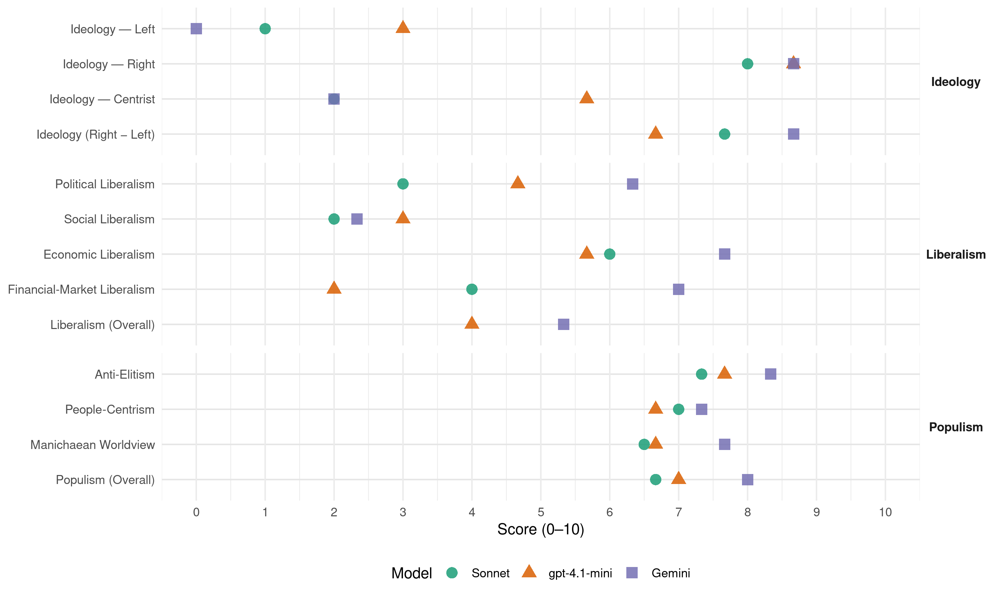

AfD (Germany, 2021)
manifesto_id 41953_202109
Get full text: This site shows derived annotations and short verbatim quotes only. The full manifesto text is © Manifesto Project / WZB — obtain it via manifesto-project.wzb.eu using the manifesto_id above.
Headline scores
| Dimension | Sonnet | gpt-4.1-mini | Gemini |
|---|---|---|---|
| Populism (Overall) | 6.7 | 7.0 | 8.0 |
| Anti-Elitism | 7.3 | 7.7 | 8.3 |
| People-Centrism | 7.0 | 6.7 | 7.3 |
| Manichaean Worldview | 6.5 | 6.7 | 7.7 |
| Ideology (Right − Left) | 7.7 | 6.7 | 8.7 |
| Liberalism (Overall) | – | 4.0 | 5.3 |
| Political Liberalism | 3.0 | 4.7 | 6.3 |
| Social Liberalism | 2.0 | 3.0 | 2.3 |
| Economic Liberalism | 6.0 | 5.7 | 7.7 |
| Financial-Market Liberalism | 4.0 | 2.0 | 7.0 |
Evidence per dimension
Economic Liberalism
Gemini · score 8.0 · verified · chunk 1
“Soziale Marktwirtschaft von Ludwig Erhard wiederbeleben”
Wir wollen die Soziale Marktwirtschaft von Ludwig Erhard wiederbeleben und Wohlstand für alle schaffen.
Gemini · score 7.0 · verified · chunk 2
“gesetzliche Mindestlohn ist mit dem Wesen”
Lohndumping in der Leiharbeit verhindern. Der gesetzliche Mindestlohn ist mit dem Wesen der Sozialen Marktwirtschaft eng verbunden.
Gemini · score 8.0 · verified · chunk 3
“auf klaren Regeln basierende Marktwirtschaft”
seit Jahrzehnten reduziert, sondern technischer Fortschritt und eine auf klaren Regeln basierende Marktwirtschaft. Techniken müssen dem Wohl
gpt-4.1-mini · score 7.0 · verified · chunk 1
“Soziale Marktwirtschaft statt sozialistischer „Industriepolitik“”
Die AfD steht für eine marktwirtschaftliche Wirtschaftspolitik: Schutz des Eigentums, Vertragsfreiheit, die Einheit von Handeln und Haftung, Berufsfreiheit und eine wettbewerbliche Wirtschaftsordnung sind elementare Bestandteile einer freiheitlichen und prosperierenden bürgerlichen Gesellschaft. Diese wollen wir erhalten und Fehlentwicklungen korrigieren. In den letzten Jahren haben sich die Bedingungen zur Mehrung des Wohlstandes verschlechtert. Die weltweite Konjunktur hat an Fahrt verloren. Politisch initiierte Umbrüche wie die „Klimarettung“ fordern enorme Investitionen und Umstrukturierungen und treffen manche Branchen brachial. So wird der Kern der deutschen Wirtschaft geschwächt. Gleichzeitig liegt Deutschland gemäß einer Studie der Europäischen Zentralbank bei diversen Wohlstandsindikatoren im europäischen Vergleich auf den hinteren Plätzen. In dieser Situation legt die Corona-Pandemie die internationale Wirtschaft zeitweise weitgehend lahm und führt zu einem dramatischen Rückgang der Wertschöpfung. Die deutsche Volkswirtschaft ist exportorientiert und von internationaler Arbeitsteilung abhängig. Deshalb ist unser Land ganz besonders von den weltweiten Auswirkungen der Corona-Krise betroffen. Die AfD will deshalb die Volkswirtschaft auf einen normalen Entwicklungspfad zurückführen.
gpt-4.1-mini · score 5.0 · verified · chunk 2
“Technischer Fortschritt und eine auf klaren Regeln basierende Marktwirtschaft.”
Nicht Verzicht, Rückschritt und Sozialismus haben die Umweltbelastungen seit Jahrzehnten reduziert, sondern technischer Fortschritt und eine auf klaren Regeln basierende Marktwirtschaft. Techniken müssen dem Wohl der Bürger, der Wirtschaft und auch unserer Heimat, d. h. der Umwelt, zugute kommen.
gpt-4.1-mini · score 5.0 · verified · chunk 3
“Energiepolitik bedeutet, Rahmenbedingungen so zu setzen, dass die Energieversorgung gesichert, umweltfreundlich und kostengünstig im Rahmen des freien Marktes gewährleistet ist.”
Gesicherte und günstige Energieversorgung ist eine der Grundvoraussetzungen von Wohlstand, Sicherheit und Gesundheit. Diese sicherzustellen ist Kernaufgabe des Staates. Energiepolitik bedeutet, Rahmenbedingungen so zu setzen, dass die Energieversorgung gesichert, umweltfreundlich und kostengünstig im Rahmen des freien Marktes gewährleistet ist.
Sonnet · score 6.0 · verified · chunk 3
“eine auf klaren Regeln basierende Marktwirtschaft”
Nicht Verzicht, Rückschritt und Sozialismus haben die Umweltbelastungen reduziert, sondern technischer Fortschritt und eine auf klaren Regeln basierende Marktwirtschaft.
Financial-Market Liberalism
Gemini · score 7.0 · verified · chunk 1
“EZB zur Manipulation des freien Kapitalmarkts müssen eingestellt werden”
Die AfD fordert eine Rückkehr zum Recht: (1) Alle Maßnahmen der EZB zur Manipulation des freien Kapitalmarkts müssen eingestellt werden
gpt-4.1-mini · score 2.0 · verified · chunk 1
“Die EZB-Nullzinspolitik zerstört langfristig alle kapitalgedeckten Alterssicherungssysteme”
Die EZB sollte eine zweite Deutsche Bundesbank sein. Stattdessen betreibt sie eine Währungspolitik der wirtschaftsfeindlichen Null- und Negativzinspolitik. Diese zerstört langfristig alle kapitalgedeckten Alterssicherungssysteme von Betriebsrenten, über staatlich geförderte kapitalgedeckte Rentensysteme, private Lebensversicherungen bis zu privaten Sparvermögen. Inzwischen fehlen über die vergangenen Jahre mehr als 500 Mrd. Euro für die Altersvorsorge der Deutschen.
gpt-4.1-mini · score 2.0 · verified · chunk 3
“Die AfD fordert die Abschaffung der DSGVO und seine Ersetzung durch ein neues, schlankes Datenschutzgesetz”
Datenschutz und Datensicherheit Wir stehen für Datenschutz und Datensicherheit ohne ausufernde Bürokratie: Die AfD fordert die Abschaffung der DSGVO und seine Ersetzung durch ein neues, schlankes Datenschutzgesetz zur Wahrung informationeller Selbstbestimmung.
Sonnet · score 4.0 · mixed · chunk 1
“Alle Maßnahmen der EZB zur Manipulation des freien Kapitalmarkts”
Alle Maßnahmen der EZB zur Manipulation des freien Kapitalmarkts müssen eingestellt werden — pro free capital markets, but also advocates national currencies and gold-backed systems.
Sonnet · score 4.0 · verified · chunk 2
“Steuer auf Rücküberweisungen”
befürworten wir die Einführung einer Steuer auf Rücküberweisungen, die den Europäischen Wirtschaftsraum (EWR) verlassen.
Sonnet · score 4.0 · verified · chunk 3
“Auch bei Versicherungsverträgen, Finanzprodukten und Mobilfunkverträgen”
Auch bei Versicherungsverträgen, Finanzprodukten und Mobilfunkverträgen wollen wir mehr Transparenz schaffen. Herstellerangaben und Vertragsklauseln sind in einer verständlichen Sprache zu verfassen.
Political Liberalism
Gemini · score 7.0 · verified · chunk 1
“Gewaltenteilung in Deutschland als Kernelement des Rechtsstaats”
Zahlreiche Gesetze und die politische Praxis haben die Gewaltenteilung in Deutschland als Kernelement des Rechtsstaats über die Jahre in Gefahr gebracht
Gemini · score 4.0 · verified · chunk 2
“Einschränkungen von Grundrechten durch Verwaltungsermächtigungen unter”
willkürlichen Grenzwerten, nicht nachvollziehbaren Maßnahmen und Einschränkungen von Grundrechten durch Verwaltungsermächtigungen unter Umgehung der Parlamente sind für uns
Gemini · score 8.0 · verified · chunk 3
“Einhaltung des Grundgesetzes und aller rechtsstaatlichen Prinzipien”
Überwachung oder Bevormundung von Bürgern und Unternehmen führen. Wir fordern auch hier die Einhaltung des Grundgesetzes und aller rechtsstaatlichen Prinzipien bei der Erstellung und Nutzung von digitalen Diensten.
gpt-4.1-mini · score 6.0 · verified · chunk 1
“Die Gewaltenteilung in Deutschland als Kernelement des Rechtsstaats”
Zahlreiche Gesetze und die politische Praxis haben die Gewaltenteilung in Deutschland als Kernelement des Rechtsstaats über die Jahre in Gefahr gebracht und zu einer überbordenden Staatsgewalt geführt: Ehemalige Politiker auf Richterstühlen, Abgeordnete, die zugleich Kanzler, Ministerpräsident oder Minister sind und sich insoweit selbst kontrollieren, sowie parteipolitische Netzwerke, die durch verbotene, verfassungswidrige Ämterpatronage entstehen, können nicht länger toleriert werden.
gpt-4.1-mini · score 4.0 · verified · chunk 2
“Die AfD fordert, die deutsche Sprache als Staatssprache im Grundgesetz festschreiben.”
Die deutsche Leitkultur beschreibt unseren Wertekonsens, der für unser Volk identitätsbildend ist und uns von anderen unterscheidet. Sie sorgt für den Zusammenhalt der Gesellschaft und ist Voraussetzung für das Funktionieren unseres Staates. Die gemeinschaftsstiftende Wirkung der deutschen Kultur ist Fundament unseres Grundgesetzes und kann nicht durch einen Verfassungspatriotismus ersetzt werden. Die AfD fordert, die deutsche Sprache als Staatssprache im Grundgesetz festschreiben. An deutschen Bildungseinrichtungen darf das Deutsche nicht durch andere Sprachen zurückgedr.ngt werden.
gpt-4.1-mini · score 4.0 · verified · chunk 3
“Grundrechte und Meinungsfreiheit gelten auch im Internet.”
Als freiheitliche und demokratische Partei wendet sich die AfD jedoch gegen jeglichen Missbrauch digitaler Techniken, die zur Überwachung oder Bevormundung von Bürgern und Unternehmen führen. Wir fordern auch hier die Einhaltung des Grundgesetzes und aller rechtsstaatlichen Prinzipien bei der Erstellung und Nutzung von digitalen Diensten. Grundrechte und Meinungsfreiheit gelten auch im Internet.
Sonnet · score 4.0 · mixed · chunk 1
“Gewaltenteilung in Deutschland als Kernelement des Rechtsstaats”
Zahlreiche Gesetze und die politische Praxis haben die Gewaltenteilung in Deutschland als Kernelement des Rechtsstaats über die Jahre in Gefahr gebracht.
Sonnet · score 3.0 · verified · chunk 2
“Einschränkungen von Grundrechten durch Verwaltungsermächtigungen”
Einschränkungen von Grundrechten durch Verwaltungsermächtigungen unter Umgehung der Parlamente sind für uns inakzeptabel.
Sonnet · score 5.0 · mixed · chunk 3
“Grundrechte und Meinungsfreiheit gelten auch im Internet”
Wir fordern auch hier die Einhaltung des Grundgesetzes und aller rechtsstaatlichen Prinzipien bei der Erstellung und Nutzung von digitalen Diensten. Grundrechte und Meinungsfreiheit gelten auch im Internet.
Liberalism (Overall)
Gemini · score 6.0 · verified · chunk 1
“Soziale Marktwirtschaft von Ludwig Erhard wiederbeleben”
Wir wollen die Soziale Marktwirtschaft von Ludwig Erhard wiederbeleben und Wohlstand für alle schaffen.
Gemini · score 4.0 · verified · chunk 2
“gesetzliche Mindestlohn ist mit dem Wesen”
Lohndumping in der Leiharbeit verhindern. Der gesetzliche Mindestlohn ist mit dem Wesen der Sozialen Marktwirtschaft eng verbunden.
Gemini · score 6.0 · verified · chunk 3
“auf klaren Regeln basierende Marktwirtschaft”
seit Jahrzehnten reduziert, sondern technischer Fortschritt und eine auf klaren Regeln basierende Marktwirtschaft. Techniken müssen dem Wohl
gpt-4.1-mini · score 5.0 · verified · chunk 1
“Die AfD steht für eine marktwirtschaftliche Wirtschaftspolitik”
Die AfD steht für eine marktwirtschaftliche Wirtschaftspolitik: Schutz des Eigentums, Vertragsfreiheit, die Einheit von Handeln und Haftung, Berufsfreiheit und eine wettbewerbliche Wirtschaftsordnung sind elementare Bestandteile einer freiheitlichen und prosperierenden bürgerlichen Gesellschaft. Diese wollen wir erhalten und Fehlentwicklungen korrigieren.
gpt-4.1-mini · score 4.0 · verified · chunk 2
“Die AfD fordert, die deutsche Sprache als Staatssprache im Grundgesetz festschreiben.”
Die deutsche Leitkultur beschreibt unseren Wertekonsens, der für unser Volk identitätsbildend ist und uns von anderen unterscheidet. Sie sorgt für den Zusammenhalt der Gesellschaft und ist Voraussetzung für das Funktionieren unseres Staates. Die gemeinschaftsstiftende Wirkung der deutschen Kultur ist Fundament unseres Grundgesetzes und kann nicht durch einen Verfassungspatriotismus ersetzt werden. Die AfD fordert, die deutsche Sprache als Staatssprache im Grundgesetz festschreiben. An deutschen Bildungseinrichtungen darf das Deutsche nicht durch andere Sprachen zurückgedr.ngt werden.
gpt-4.1-mini · score 3.0 · verified · chunk 3
“Grundrechte und Meinungsfreiheit gelten auch im Internet.”
Als freiheitliche und demokratische Partei wendet sich die AfD jedoch gegen jeglichen Missbrauch digitaler Techniken, die zur Überwachung oder Bevormundung von Bürgern und Unternehmen führen. Wir fordern auch hier die Einhaltung des Grundgesetzes und aller rechtsstaatlichen Prinzipien bei der Erstellung und Nutzung von digitalen Diensten. Grundrechte und Meinungsfreiheit gelten auch im Internet.
Sonnet · score 4.0 · mixed · chunk 1
“freiheitlichen Privatrechtsordnung einsetzen”
Die AfD wird sich im Deutschen Bundestag gegen diese Entwicklung und für die Bewahrung einer freiheitlichen Privatrechtsordnung einsetzen.
Sonnet · score 5.0 · mixed · chunk 3
“eine auf klaren Regeln basierende Marktwirtschaft”
Nicht Verzicht, Rückschritt und Sozialismus haben die Umweltbelastungen reduziert, sondern technischer Fortschritt und eine auf klaren Regeln basierende Marktwirtschaft.
Anti-Elitism
Gemini · score 9.0 · verified · chunk 1
“eine politische Klasse herausgebildet, deren vordringliches Interesse ihrer Macht”
In unserem Land hat sich aber eine politische Klasse herausgebildet, deren vordringliches Interesse ihrer Macht, ihrem Status und ihrem materiellen Wohlergehen gilt.
Gemini · score 8.0 · verified · chunk 2
“ungesetzliche Migration führen dazu”
zunehmende Zahl der Ein-Personen-Haushalte sowie die ungezügelte und gesetzeswidrige Migration führen dazu, dass es für untere und mittlere
Gemini · score 8.0 · verified · chunk 3
“Zusammenrücken der Altparteien zu einem politischen Meinungskartell”
tabuisiert. Das Zusammenrücken der Altparteien zu einem politischen Meinungskartell hat die linke Dominanz im öffentlich-rechtlichen
gpt-4.1-mini · score 9.0 · verified · chunk 1
“eine politische Klasse herausgebildet hat, deren vordringliches Interesse ihrer Macht, ihrem Status und ihrem materiellen Wohlergehen gilt”
Die Regierungspolitiker in Bund und Ländern haben mit ihrer Flüchtlings-, Europa- und Corona-Politik die Prinzipien der deutschen Staatlichkeit, des Rechts und der Verfassung vielfach verletzt. Zugleich haben sich die Volksvertreter der etablierten Parteien den grundgesetzlich garantierten Parlamentsvorbehalt für alle wichtigen Entscheidungen im Staat ohne Widerstand nehmen lassen. Einzelne rechts- und verfassungswidrige Maßnahmen wurden zwar durch mutige Richter in Hunderten von Urteilen zu Fall gebracht. In unserem Land hat sich aber eine politische Klasse herausgebildet hat, deren vordringliches Interesse ihrer Macht, ihrem Status und ihrem materiellen Wohlergehen gilt. Diese setzt die soziale und kulturelle Zukunft unseres Volkes, die Stärke unserer Wirtschaft und damit unseres Wohlstandes aufs Spiel und stellt Multikulturalität, Diversität, Globalisierung und vermeintliche Gendergerechtigkeit über alles.
gpt-4.1-mini · score 7.0 · verified · chunk 2
“Die Politik hat vor der Aufgabe, diesen Widerspruch aufzulösen, kapituliert – getrieben von einer mächtigen Anti-Abschiebe-Industrie.”
Die Zahl der Ausreisepflichtigen ist dabei kontinuierlich gestiegen und hat im zweiten Quartal 2021 die Zahl von ca. 300.000 Personen erreicht – während die Zahl freiwilliger Ausreisen und erfolgreicher Abschiebungen kontinuierlich sinkt. Die Politik hat vor der Aufgabe, diesen Widerspruch aufzulösen, kapituliert – getrieben von einer mächtigen Anti-Abschiebe-Industrie. Es ist zynisch und inhuman, Menschen mit der faktischen Garantie auf dauerhaften Verbleib im „reichen” Deutschland anzulocken und dabei deren möglichen Tod im Mittelmeer in Kauf zu nehmen.
gpt-4.1-mini · score 7.0 · verified · chunk 3
“Die Regierung auch die privaten Medien. Diese parteipolitische Medienbeeinflussung lehnen wir ab.”
Über Subventionen, Unternehmensbeteiligungen und regierungspolitische Werbefinanzierung beeinflusst die Regierung auch die privaten Medien. Diese parteipolitische Medienbeeinflussung lehnen wir ab. Beteiligungen von Parteien an Medienunternehmen wollen wir verbieten.
Sonnet · score 9.0 · verified · chunk 1
“politische Klasse herausgebildet, deren vordringliches Interesse ihrer Macht”
In unserem Land hat sich aber eine politische Klasse herausgebildet, deren vordringliches Interesse ihrer Macht, ihrem Status und ihrem materiellen Wohlergehen gilt.
Sonnet · score 6.0 · verified · chunk 2
“entwürdigenden und ungerechten Rentenpolitik der Altparteien”
Der entwürdigenden und ungerechten Rentenpolitik der Altparteien erteilen wir daher eine deutliche Absage.
Sonnet · score 7.0 · verified · chunk 3
“Das Zusammenrücken der Altparteien zu einem politischen Meinungskartell”
Tatsachen werden verdreht und kontroverse Themen tabuisiert. Das Zusammenrücken der Altparteien zu einem politischen Meinungskartell hat die linke Dominanz im öffentlich-rechtlichen Rundfunk verfestigt.
Ideology — Centrist
Gemini · score 2.0 · verified · chunk 3
“Entscheidungen näher zum Bürger bringen”
Werte von Stadt und Land sind gleichrangig und ergänzen sich. Mit einer traditionsbezogenen, familienfreundlichen und selbstbewussten Gestaltung des ländlichen Lebensraumes wollen wir unsere Heimat wieder ins Gleichgewicht bringen. Entscheidungen näher zum Bürger bringen: Die Regionen und Landkreise
gpt-4.1-mini · score 7.0 · verified · chunk 1
“Wir vertrauen nicht mehr darauf, dass Regierungen und Parlamente zu Währungskrisen, Migration, Islamisierung oder zur Energiewende tragfähige Lösungen finden”
Entgegen anderslautenden Behauptungen entscheiden Bürger in Schicksalsfragen der Nation weitsichtiger, friedfertiger und gemeinwohlorientierter als Berufspolitiker. Das ist die Lehre aus der Wiedervereinigung, aus der Ablehnung des „EU-Verfassungsvertrags“ durch das französische und das niederländische Volk und der Entscheidung des Vereinigten Königreichs, aus der Europäischen Union auszutreten. Wir vertrauen nicht mehr darauf, dass Regierungen und Parlamente zu Währungskrisen, Migration, Islamisierung oder zur Energiewende tragfähige Lösungen finden. Das Volk als Souverän muss in direkter Mitbestimmung Träger solcher schicksalhaften Entscheidungen sein.
gpt-4.1-mini · score 5.0 · verified · chunk 2
“Eine existentielle Frage wie die Zuwanderung muss in demokratischer Selbstbestimmung auf nationaler Ebene entschieden werden.”
Eine existentielle Frage wie die Zuwanderung muss in demokratischer Selbstbestimmung auf nationaler Ebene entschieden werden. Unser Modell für das 21. Jahrhundert hat neben der Ablösung der überholten internationalen Regelwerke, wie der Genfer Flüchtlingskonvention von 1951, folgende Kernpunkte: Fokus auf humanitäre Hilfe in Krisenregionen selbst (intrakontinentale Fluchtalternativen) Zurückweisung von Asylsuchenden bei Einreise an der Grenze gemäß Art. 16a Abs. 2 S. 1 GG Ausschließlich qualifizierte Einwanderung nach japanischem Vorbild
gpt-4.1-mini · score 5.0 · verified · chunk 3
“Wir wollen gleichwertige Lebens- und Arbeitsbedingungen in ganz Deutschland”
Wir wollen gleichwertige Lebens- und Arbeitsbedingungen in ganz Deutschland, die Wahrung und zukunftsfähige Weiterentwicklung regionaler Identität in allen Teilräumen des Landes. Die Lebensweisen und Werte von Stadt und Land sind gleichrangig und ergänzen sich.
Sonnet · score 2.0 · verified · chunk 1
“Als einzige der im Bundestag vertretenen Parteien”
Als einzige der im Bundestag vertretenen Parteien halten wir das deutsche Volk für ebenso mündig wie das der Schweizer.
Sonnet · score 2.0 · verified · chunk 2
“Interessenwahrung der Deutschen”
mit dem Primärziel der Interessenwahrung der Deutschen und bereits zugewanderter Bürger, die sich zur kulturellen Identität Deutschlands bekennen.
Sonnet · score 2.0 · verified · chunk 3
“an den Bedürfnissen der Bürger orientierte Verkehrspolitik”
Die AfD spricht sich für eine an den Bedürfnissen der Bürger orientierte Verkehrspolitik aus.
Ideology — Left
Gemini · score 0.0 · verified · chunk 1
“hetzerische Klassenkampfrhetorik oder vorsätzlich herbeigeführte Konflikte durch Vertreter linker Parteien lehnen wir dagegen entschieden ab”
Forderungen nach Enteignungen, Abschaffung von Privateigentum und Vertragsfreiheit, hetzerische Klassenkampfrhetorik oder vorsätzlich herbeigeführte Konflikte durch Vertreter linker Parteien lehnen wir dagegen entschieden ab.
Gemini · score 0.0 · verified · chunk 3
“Nicht Verzicht, Rückschritt und Sozialismus”
Zukunftserwartung zu vermitteln. Nicht Verzicht, Rückschritt und Sozialismus haben die Umweltbelastungen seit Jahrzehnten
gpt-4.1-mini · score 3.0 · verified · chunk 1
“Forderungen nach Enteignungen, Abschaffung von Privateigentum und Vertragsfreiheit, hetzerische Klassenkampfrhetorik oder vorsätzlich herbeigeführte Konflikte durch Vertreter linker Parteien lehnen wir dagegen entschieden ab”
Zu unserem Verständnis von Sozialer Marktwirtschaft gehört ein gedeihliches Zusammenwirken von Unternehmern und Beschäftigten. Sie sind keine Gegner, sondern kooperieren im Geiste der Sozialpartnerschaft, um betriebliche Ziele zu erreichen und Interessengegensätze ins Gleichgewicht zu bringen. Als AfD bekennen wir uns zur Mitwirkung und Mitbestimmung der Beschäftigten in den Betrieben und zu allgemeinverbindlichen Tarifverträgen. Forderungen nach Enteignungen, Abschaffung von Privateigentum und Vertragsfreiheit, hetzerische Klassenkampfrhetorik oder vorsätzlich herbeigeführte Konflikte durch Vertreter linker Parteien lehnen wir dagegen entschieden ab. Sie gefährden den sozialen Frieden und eine vertrauensvolle Zusammenarbeit Die Zukunft der organisierten Unternehmer- und Beschäftigtenvertreter ist blau: Unser sozialpolitisches Ziel bleibt „Wohlstand für alle“!
gpt-4.1-mini · score 3.0 · verified · chunk 2
“Die Behauptung einiger Wirtschaftsverbände und Lobbyisten, in Deutschland herrsche Fachkräftemangel und damit ein Bedarf an qualifizierter Einwanderung, dient nur vordergründig dem Gemeinwohl”
Qualifizierte Zuwanderung Das aktuelle Einwanderungssystem schadet Deutschland kulturell sowie wirtschaftlich und ist dringend reformbedürftig. Die AfD bekennt sich dazu, die kulturelle Identität Deutschlands zu wahren. Vorbild einer identitätswahrenden Migrationspolitik können für Deutschland nicht klassische Einwanderungsländer von der Größe Kanadas oder Australiens sein, sondern eher Länder wie Japan, die eine ihrer Landesstruktur entsprechende Begrenzung und Steuerung der Migration verfolgen. Durch Lockdown-Krise, Automatisierung und Digitalisierung sind die Zeiten rekordhoher Beschäftigung absehbar vorbei. Massenmigration erzeugt Lohndruck bis in die Mittelschicht hinein und führt zu Konkurrenz um Sozialleistungen. Wir fordern die Ausarbeitung eines umfassenden migrationspolitischen Ansatzes nach japanischem Vorbild mit dem Primärziel der Interessenwahrung der Deutschen und bereits zugewanderter Bürger, die sich zur kulturellen Identität Deutschlands bekennen. Die Behauptung einiger Wirtschaftsverbände und Lobbyisten, in Deutschland herrsche Fachkräftemangel und damit ein Bedarf an qualifizierter Einwanderung, dient nur vordergründig dem Gemeinwohl und darf deshalb nicht maßgeblich sein.
gpt-4.1-mini · score 3.0 · verified · chunk 3
“Der bisherige soziale Wohnungsbau ist gescheitert, er kann nur einen Bruchteil der Berechtigten erreichen.”
Mehr Wohngeld statt Sozialer Wohnungsbau Der bisherige soziale Wohnungsbau ist gescheitert, er kann nur einen Bruchteil der Berechtigten erreichen. Er führt zu Fehlbelegungen und verursacht hohe Kosten für den Steuerzahler. Es ist besser, einkommensschwache Mieter vermehrt mit Wohngeld zu unterstützen, wodurch eine soziale Durchmischung gewährleistet wird.
Sonnet · score 1.0 · verified · chunk 1
“Forderungen nach Enteignungen, Abschaffung von Privateigentum”
Forderungen nach Enteignungen, Abschaffung von Privateigentum und Vertragsfreiheit, hetzerische Klassenkampfrhetorik oder vorsätzlich herbeigeführte Konflikte durch Vertreter linker Parteien lehnen wir dagegen entschieden ab.
Sonnet · score 1.0 · verified · chunk 2
“schädliche Einfluss wirtschaftlicher Partikularinteressen”
Der schädliche Einfluss wirtschaftlicher Partikularinteressen oder gar damit kaschierter antideutscher Ressentiments muss beendet werden.
Sonnet · score 1.0 · verified · chunk 3
“Nicht Verzicht, Rückschritt und Sozialismus”
Nicht Verzicht, Rückschritt und Sozialismus haben die Umweltbelastungen seit Jahrzehnten reduziert, sondern technischer Fortschritt und eine auf klaren Regeln basierende Marktwirtschaft.
Ideology (Right − Left)
Gemini · score 9.0 · verified · chunk 1
“Abwehr unerlaubter Zuwanderung und zur Kriminalitätsbekämpfung”
Die Grenzen müssen zur Abwehr unerlaubter Zuwanderung und zur Kriminalitätsbekämpfung mit einer modernen und wirksamen Sicherung ausgestattet werden.
Gemini · score 9.0 · verified · chunk 2
“die kulturelle Identität Deutschlands zu wahren”
reformbedürftig. Die AfD bekennt sich dazu, die kulturelle Identität Deutschlands zu wahren. Vorbild einer identitätswahrenden Migrationspolitik
Gemini · score 8.0 · verified · chunk 3
“ungezügelte und gesetzeswidrige Migration”
zunehmende Zahl der Ein-Personen-Haushalte sowie die ungezügelte und gesetzeswidrige Migration führen dazu, dass es für untere
gpt-4.1-mini · score 7.0 · verified · chunk 1
“Wir vertrauen nicht mehr darauf, dass Regierungen und Parlamente zu Währungskrisen, Migration, Islamisierung oder zur Energiewende tragfähige Lösungen finden”
Entgegen anderslautenden Behauptungen entscheiden Bürger in Schicksalsfragen der Nation weitsichtiger, friedfertiger und gemeinwohlorientierter als Berufspolitiker. Das ist die Lehre aus der Wiedervereinigung, aus der Ablehnung des „EU-Verfassungsvertrags“ durch das französische und das niederländische Volk und der Entscheidung des Vereinigten Königreichs, aus der Europäischen Union auszutreten. Wir vertrauen nicht mehr darauf, dass Regierungen und Parlamente zu Währungskrisen, Migration, Islamisierung oder zur Energiewende tragfähige Lösungen finden. Das Volk als Souverän muss in direkter Mitbestimmung Träger solcher schicksalhaften Entscheidungen sein.
gpt-4.1-mini · score 7.0 · verified · chunk 2
“Die AfD wird nicht zulassen, dass Deutschland aus falsch verstandener Toleranz vor dem Islam seine tradierte Kultur verliert.”
Kulturrelativismus und Multikulturalismus führen zu einem Neben- und Gegeneinander von Parallelgesellschaften, denen es an gemeinsamen Werten für das Zusammenleben fehlt. In einer derart fragmentierten Gesellschaft entstehen Konflikte, die kaum noch beherrschbar sind. Die AfD wird nicht zulassen, dass Deutschland aus falsch verstandener Toleranz vor dem Islam seine tradierte Kultur verliert. Die deutsche Sprache als Zentrum unserer Identität
gpt-4.1-mini · score 6.0 · verified · chunk 3
“Diese parteipolitische Medienbeeinflussung lehnen wir ab.”
Über Subventionen, Unternehmensbeteiligungen und regierungspolitische Werbefinanzierung beeinflusst die Regierung auch die privaten Medien. Diese parteipolitische Medienbeeinflussung lehnen wir ab. Beteiligungen von Parteien an Medienunternehmen wollen wir verbieten.
Sonnet · score 9.0 · verified · chunk 1
“Asylparadies Deutschland schließen”
Migration, Asyl und Integration: Asylparadies Deutschland schließen — strong right-populist framing combining nativist, anti-elite and people-centric appeals.
Sonnet · score 7.0 · verified · chunk 2
“Zurückweisung von Asylsuchenden bei Einreise”
Zurückweisung von Asylsuchenden bei Einreise an der Grenze gemäß Art. 16a Abs. 2 S. 1 GG
Sonnet · score 7.0 · verified · chunk 3
“ungezügelte und gesetzeswidrige Migration”
die ungezügelte und gesetzeswidrige Migration führen dazu, dass es für untere und mittlere Einkommensgruppen in angespannten Märkten zusehends schwerer wird, eine bezahlbare Wohnung zu finden.
Ideology — Right
Gemini · score 9.0 · verified · chunk 1
“Abwehr unerlaubter Zuwanderung und zur Kriminalitätsbekämpfung”
Die Grenzen müssen zur Abwehr unerlaubter Zuwanderung und zur Kriminalitätsbekämpfung mit einer modernen und wirksamen Sicherung ausgestattet werden.
Gemini · score 9.0 · verified · chunk 2
“die kulturelle Identität Deutschlands zu wahren”
reformbedürftig. Die AfD bekennt sich dazu, die kulturelle Identität Deutschlands zu wahren. Vorbild einer identitätswahrenden Migrationspolitik
Gemini · score 8.0 · verified · chunk 3
“ungezügelte und gesetzeswidrige Migration”
zunehmende Zahl der Ein-Personen-Haushalte sowie die ungezügelte und gesetzeswidrige Migration führen dazu, dass es für untere
gpt-4.1-mini · score 9.0 · verified · chunk 1
“Die unlösbaren Folgeprobleme der unregulierten Massenzuwanderung seit 2015 sind unübersehbar”
Die desaströsen Folgen der unregulierten Massenzuwanderung seit 2015 sind unübersehbar und verschärfen sich weiter: überproportionale Zuwandererkriminalität, Terroranschläge und islamischer Separatismus belegen dies ebenso wie dreistellige Milliardenkosten, Wohnraummangel und die hohe Arbeitslosigkeit unter den Zuwanderern. Erfolgreiche Integration kann und wird so nicht gelingen.
gpt-4.1-mini · score 9.0 · verified · chunk 2
“Die AfD wird nicht zulassen, dass Deutschland aus falsch verstandener Toleranz vor dem Islam seine tradierte Kultur verliert.”
Kulturrelativismus und Multikulturalismus führen zu einem Neben- und Gegeneinander von Parallelgesellschaften, denen es an gemeinsamen Werten für das Zusammenleben fehlt. In einer derart fragmentierten Gesellschaft entstehen Konflikte, die kaum noch beherrschbar sind. Die AfD wird nicht zulassen, dass Deutschland aus falsch verstandener Toleranz vor dem Islam seine tradierte Kultur verliert. Die deutsche Sprache als Zentrum unserer Identität
gpt-4.1-mini · score 8.0 · verified · chunk 3
“Der Erwerb von Wohnimmobilien durch Käufer ohne deutsche Staatsbürgerschaft, deren Hauptwohnsitz im Ausland liegt, über eine Erhöhung der Grunderwerbsteuer auf 20% zu erschweren.”
Damit Einheimische besser auf das vorhandene Angebot zugreifen können, ist der Erwerb von Wohnimmobilien durch Käufer ohne deutsche Staatsbürgerschaft, deren Hauptwohnsitz im Ausland liegt, über eine Erhöhung der Grunderwerbsteuer auf 20% zu erschweren. Die Grundsteuer und Gebühren wie die EEG-Umlage und die GEZ-Gebühren (Haushaltsabgabe) sind zu streichen.
Sonnet · score 8.0 · verified · chunk 2
“kulturelle Identität Deutschlands zu wahren”
Die AfD bekennt sich dazu, die kulturelle Identität Deutschlands zu wahren. Vorbild einer identitätswahrenden Migrationspolitik
Sonnet · score 8.0 · verified · chunk 3
“ungezügelte und gesetzeswidrige Migration führen dazu”
Fehlender Wohnungsneubau, Landflucht, die zunehmende Zahl der Ein-Personen-Haushalte sowie die ungezügelte und gesetzeswidrige Migration führen dazu, dass es für untere und mittlere Einkommensgruppen schwerer wird.
Manichaean Worldview
Gemini · score 8.0 · verified · chunk 1
“autoritären und teilweise totalitären Gebaren der Regierungspolitiker”
Deshalb halten wir die unmittelbare Demokratie für ein unverzichtbares Mittel, um dem autoritären und teilweise totalitären Gebaren der Regierungspolitiker Einhalt zu gebieten.
Gemini · score 8.0 · verified · chunk 2
“familienzersetzenden Politik wird die demografische Katastrophe”
notwendig. Eine Fortsetzung der herrschenden, familienzersetzenden Politik wird die demografische Katastrophe, in die wir greaten sind, weiter
Gemini · score 7.0 · verified · chunk 3
“bedroht unsere Freiheit in einem immer beängstigenderen Ausmaß”
die CO2-Emissionen faktisch auf null zu senken, führt zu einem radikalen Umbau von Industrie und Gesellschaft („Die Große Transformation“ / „The Great Reset“) und bedroht unsere Freiheit in einem immer beängstigenderen Ausmaß. Die AfD lehnt dieses Ziel
gpt-4.1-mini · score 7.0 · verified · chunk 1
“Die totalitären Tendenzen haben auch in Deutschland ein demokratiegefährdendes Maß angenommen”
Die totalitären Tendenzen haben auch in Deutschland ein demokratiegefährdendes Maß angenommen. Die verfassungswidrige Grenzöffnung und die massiven Grundrechtseinschränkungen im Namen der Corona-Krise waren die bisherigen Höhepunkte im täglichen Bruch von Recht und Verfassung durch Regierungspolitiker. Die Mainstream-Medien haben ihre elementare Aufgabe als vierte Gewalt aufgegeben und kritisch-objektive Berichterstattung gegen Regierungslobhudelei getauscht.
gpt-4.1-mini · score 7.0 · verified · chunk 2
“Die desaströsen Folgen der unregulierten Massenzuwanderung seit 2015 sind unübersehbar und verschärfen sich weiter: überproportionale Zuwandererkriminalität, Terroranschläge und islamischer Separatismus belegen dies ebenso”
Die unlösbaren Folgeprobleme Die desaströsen Folgen der unregulierten Massenzuwanderung seit 2015 sind unübersehbar und verschärfen sich weiter: überproportionale Zuwandererkriminalität, Terroranschläge und islamischer Separatismus belegen dies ebenso wie dreistellige Milliardenkosten, Wohnraummangel und die hohe Arbeitslosigkeit unter den Zuwanderern.
gpt-4.1-mini · score 6.0 · verified · chunk 3
“Eine Vormachtstellung in den sozialen Medien und im Bildungswesen darf nicht dazu missbraucht werden”
Eine Vormachtstellung in den sozialen Medien und im Bildungswesen darf nicht dazu missbraucht werden, die politische Willensbildung einseitig zu beeinflussen. Als Quasi-Oligopol wollen wir die Anbieter großer sozialer Medien wie Facebook, Twitter oder Instagram dazu verpflichten, die Meinungsfreiheit ihrer Nutzer zu respektieren.
Sonnet · score 8.0 · verified · chunk 1
“autoritären und teilweise totalitären Gebaren der Regierungspolitiker”
Deshalb halten wir die unmittelbare Demokratie für ein unverzichtbares Mittel, um dem autoritären und teilweise totalitären Gebaren der Regierungspolitiker Einhalt zu gebieten.
Sonnet · score 5.0 · verified · chunk 2
“mächtigen Anti-Abschiebe-Industrie”
Die Politik hat vor der Aufgabe, diesen Widerspruch aufzulösen, kapituliert – getrieben von einer mächtigen Anti-Abschiebe-Industrie.
People-Centrism
Gemini · score 9.0 · verified · chunk 1
“Das Volk ist der Souverän”
Demokratie und Rechtsstaat Das Volk ist der Souverän Die Regierungspolitiker in Bund und Ländern
Gemini · score 7.0 · verified · chunk 2
“Interessenwahrung der Deutschen und bereits zugewanderter”
japanischem Vorbild mit dem Primärziel der Interessenwahrung der Deutschen und bereits zugewanderter Bürger, die sich zur kulturellen Identität
Gemini · score 6.0 · verified · chunk 3
“Techniken müssen dem Wohl der Bürger”
Sozialismus haben die Umweltbelastungen seit Jahrzehnten reduziert, sondern technischer Fortschritt und eine auf klaren Regeln basierende Marktwirtschaft. Techniken müssen dem Wohl der Bürger, der Wirtschaft und auch unserer Heimat
gpt-4.1-mini · score 8.0 · verified · chunk 1
“Das Volk als Souverän muss in direkter Mitbestimmung Träger solcher schicksalhaften Entscheidungen sein”
Entgegen anderslautenden Behauptungen entscheiden Bürger in Schicksalsfragen der Nation weitsichtiger, friedfertiger und gemeinwohlorientierter als Berufspolitiker. Das ist die Lehre aus der Wiedervereinigung, aus der Ablehnung des „EU-Verfassungsvertrags“ durch das französische und das niederländische Volk und der Entscheidung des Vereinigten Königreichs, aus der Europäischen Union auszutreten. Wir vertrauen nicht mehr darauf, dass Regierungen und Parlamente zu Währungskrisen, Migration, Islamisierung oder zur Energiewende tragfähige Lösungen finden. Das Volk als Souverän muss in direkter Mitbestimmung Träger solcher schicksalhaften Entscheidungen sein.
gpt-4.1-mini · score 6.0 · verified · chunk 2
“Unser Modell für das 21. Jahrhundert hat neben der Ablösung der überholten internationalen Regelwerke, wie der Genfer Flüchtlingskonvention von 1951, folgende Kernpunkte”
Eine existentielle Frage wie die Zuwanderung muss in demokratischer Selbstbestimmung auf nationaler Ebene entschieden werden. Unser Modell für das 21. Jahrhundert hat neben der Ablösung der überholten internationalen Regelwerke, wie der Genfer Flüchtlingskonvention von 1951, folgende Kernpunkte: Fokus auf humanitäre Hilfe in Krisenregionen selbst (intrakontinentale Fluchtalternativen) Zurückweisung von Asylsuchenden bei Einreise an der Grenze gemäß Art. 16a Abs. 2 S. 1 GG Ausschließlich qualifizierte Einwanderung nach japanischem Vorbild
gpt-4.1-mini · score 6.0 · verified · chunk 3
“Die Lebensweisen und Werte von Stadt und Land sind gleichrangig und ergänzen sich.”
Wir wollen gleichwertige Lebens- und Arbeitsbedingungen in ganz Deutschland, die Wahrung und zukunftsfähige Weiterentwicklung regionaler Identität in allen Teilräumen des Landes. Die Lebensweisen und Werte von Stadt und Land sind gleichrangig und ergänzen sich. Mit einer traditionsbezogenen, familienfreundlichen und selbstbewussten Gestaltung des ländlichen Lebensraumes wollen wir unsere Heimat wieder ins Gleichgewicht bringen.
Sonnet · score 9.0 · verified · chunk 1
“Das Volk als Souverän muss in direkter Mitbestimmung”
Das Volk als Souverän muss in direkter Mitbestimmung Träger solcher schicksalhaften Entscheidungen sein.
Sonnet · score 6.0 · verified · chunk 2
“Primärziel der Interessenwahrung der Deutschen”
umfassenden migrationspolitischen Ansatzes nach japanischem Vorbild mit dem Primärziel der Interessenwahrung der Deutschen und bereits zugewanderter Bürger
Sonnet · score 6.0 · verified · chunk 3
“Im Vordergrund steht für uns die Freiheit der Bürger”
Eine ideologisch geleitete Verbotspolitik, die bestimmte Verkehrsmittel bevorzugt oder diskriminiert, lehnt die AfD ab. Im Vordergrund steht für uns die Freiheit der Bürger in der Wahl des Verkehrsmittels.
Populism (Overall)
Gemini · score 9.0 · verified · chunk 1
“Das Volk als Souverän muss in direkter Mitbestimmung Träger solcher schicksalhaften Entscheidungen sein”
Wir vertrauen nicht mehr darauf, dass Regierungen und Parlamente zu Währungskrisen, Migration, Islamisierung oder zur Energiewende tragfähige Lösungen finden. Das Volk als Souverän muss in direkter Mitbestimmung Träger solcher schicksalhaften Entscheidungen sein.
Gemini · score 8.0 · verified · chunk 2
“familienzersetzenden Politik wird die demografische Katastrophe”
notwendig. Eine Fortsetzung der herrschenden, familienzersetzenden Politik wird die demografische Katastrophe, in die wir greaten sind, weiter
Gemini · score 7.0 · verified · chunk 3
“Zusammenrücken der Altparteien zu einem politischen Meinungskartell”
tabuisiert. Das Zusammenrücken der Altparteien zu einem politischen Meinungskartell hat die linke Dominanz im öffentlich-rechtlichen
gpt-4.1-mini · score 8.0 · verified · chunk 1
“Das Volk als Souverän muss in direkter Mitbestimmung Träger solcher schicksalhaften Entscheidungen sein”
Entgegen anderslautenden Behauptungen entscheiden Bürger in Schicksalsfragen der Nation weitsichtiger, friedfertiger und gemeinwohlorientierter als Berufspolitiker. Das ist die Lehre aus der Wiedervereinigung, aus der Ablehnung des „EU-Verfassungsvertrags“ durch das französische und das niederländische Volk und der Entscheidung des Vereinigten Königreichs, aus der Europäischen Union auszutreten. Wir vertrauen nicht mehr darauf, dass Regierungen und Parlamente zu Währungskrisen, Migration, Islamisierung oder zur Energiewende tragfähige Lösungen finden. Das Volk als Souverän muss in direkter Mitbestimmung Träger solcher schicksalhaften Entscheidungen sein.
gpt-4.1-mini · score 7.0 · verified · chunk 2
“Die Politik hat vor der Aufgabe, diesen Widerspruch aufzulösen, kapituliert – getrieben von einer mächtigen Anti-Abschiebe-Industrie.”
Die Zahl der Ausreisepflichtigen ist dabei kontinuierlich gestiegen und hat im zweiten Quartal 2021 die Zahl von ca. 300.000 Personen erreicht – während die Zahl freiwilliger Ausreisen und erfolgreicher Abschiebungen kontinuierlich sinkt. Die Politik hat vor der Aufgabe, diesen Widerspruch aufzulösen, kapituliert – getrieben von einer mächtigen Anti-Abschiebe-Industrie. Es ist zynisch und inhuman, Menschen mit der faktischen Garantie auf dauerhaften Verbleib im „reichen” Deutschland anzulocken und dabei deren möglichen Tod im Mittelmeer in Kauf zu nehmen.
gpt-4.1-mini · score 6.0 · verified · chunk 3
“Diese parteipolitische Medienbeeinflussung lehnen wir ab.”
Über Subventionen, Unternehmensbeteiligungen und regierungspolitische Werbefinanzierung beeinflusst die Regierung auch die privaten Medien. Diese parteipolitische Medienbeeinflussung lehnen wir ab. Beteiligungen von Parteien an Medienunternehmen wollen wir verbieten.
Sonnet · score 9.0 · verified · chunk 1
“politische Klasse herausgebildet, deren vordringliches Interesse ihrer Macht”
In unserem Land hat sich aber eine politische Klasse herausgebildet, deren vordringliches Interesse ihrer Macht, ihrem Status und ihrem materiellen Wohlergehen gilt.
Sonnet · score 5.0 · verified · chunk 2
“Altparteien erteilen wir daher eine deutliche Absage”
Der entwürdigenden und ungerechten Rentenpolitik der Altparteien erteilen wir daher eine deutliche Absage.
Sonnet · score 6.0 · verified · chunk 3
“Das Zusammenrücken der Altparteien zu einem politischen Meinungskartell”
Das Zusammenrücken der Altparteien zu einem politischen Meinungskartell hat die linke Dominanz im öffentlich-rechtlichen Rundfunk und in privaten Mainstream-Medien verfestigt.
Social Liberalism